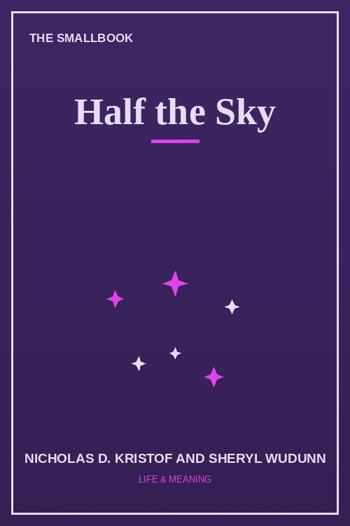

Library › Life & Meaning
Half the Sky - Summary & Key Lessons

Turning oppression into opportunity for women worldwide.
📖 OPEN THE FULL INTERACTIVE BREAKDOWN →🌐 Read it in Hindi, Hinglish, Gujarati, Tamil & 22 more languages, with audio.
💡 The Big Idea
Journalists Nicholas D. Kristof and Sheryl WuDunn document the scale of gender oppression, trafficking, maternal mortality, denied schooling, fistula, honour crimes, and then spend most of the book on what works: girls' education, microfinance, maternal health, and women's own organisations. Their thesis is economic as much as moral: women hold up half the sky, and nations that educate and employ them transform within a generation. Each horror chapter is paired with an intervention and a named woman proving it.
🧠 The 8 Key Lessons
Lesson 1: Education Is the Highest Yield Investment Ever Measured
Why Girls?
The book's economic core: educating girls returns more than roads, dams or factories, in wages, health, smaller and better nourished families, and children, sons included, who stay in school. Kristof and Sheryl WuDunn pile up the studies, extra years of schooling raising wages ten to twenty percent, children of educated mothers half as likely to die, and then show the classrooms. Their argument to finance ministers is deliberately unromantic: if you may fund one thing, fund the thing that funds everything else for sixty years.
📖 Example: They profile girls who walked hours to schools built by aid groups and foreign donors, then returned as teachers and nurses, the compound interest visible in a single village within fifteen years. The donors who built one such school describe it, in the economics the book teaches, as the best performing asset they ever held. Read the full example →
⚡ Do this: Fund one girl's schooling this year through a vetted organisation, and treat it as the portfolio's highest yield line, reviewed annually.
Lesson 2: Maternal Health: The Deaths That Are Mostly Preventable
Maternal Mortality and Fistula
The chapters on women dying in childbirth, and on fistula, childbirth injuries that leave young women incontinent and exiled, carry the book's most fixable outrage: most of these deaths and injuries yield to known, cheap medicine, trained midwives, transport, surgical repair. Sheryl WuDunn in particular writes the fistula hospitals, where a surgery costing less than a phone restores a woman's entire life, as proof that the gap is not knowledge but priority. The readers' letters after publication funded such hospitals for years.
📖 Example: They tell of a teenager repaired at the Addis Ababa Fistula Hospital who returned to her village after years of hiding, and of the hospital's founder Catherine Hamlin, who built a life's work on one operation. The cost per restored life sits in the book like an indictment with a receipt attached. Read the full example →
⚡ Do this: Direct one donation this year to maternal health or fistula repair, and learn the cost per life your money buys. Publish it to your circle.
Lesson 3: The Helpers Are Mostly Local Women; Fund Them Accordingly
What Works
Kristof and Sheryl WuDunn's reporting discipline: for every problem they find the local women already solving it, the teacher in the slum school, the nurse running the clinic, the organiser of the savings group, and argue that effective aid routes money and protection through them rather than parachuting substitutes. The final chapters build a reader's toolkit: vetted organisations, the case for women's funds, and warnings about saviour tourism. Empowerment, their evidence says, is rarely imported; it is resourced.
📖 Example: A Cambodian organiser who survived trafficking and now raids brothels with police gets the book's longest admiring profile, not because she is photogenic but because her organisation's rescue and retraining numbers embarrass larger agencies. The funding advice follows the competence, which is the chapter's entire method. Read the full example →
⚡ Do this: Audit your giving this year: what fraction reaches organisations led by women from the communities served? Move one line.
Lesson 4: Trafficking and the Economics of Rescue
The Trafficking Chapters
Kristof and Sheryl WuDunn report from brothels in Cambodia and India where girls are held in debt bondage, and refuse the reader the comfort of despair: they follow rescues, raids and, hardest of all, the economics that re-traffics the rescued when no livelihood waits. Their policy chapters argue for the unglamorous stack, policing that punishes buyers, border scrutiny, schooling and jobs for survivors, and they profile the survivors who became the rescuers as the only sustainable police force the problem has found.
📖 Example: A rescued girl who returned voluntarily to the brothel because it fed her family more reliably than freedom did reorganises the reader's entire response. The book uses her story to demolish rescue without economics, and to fund, in subsequent editions' notes, the programmes that pair liberation with livelihoods. Read the full example →
⚡ Do this: If you give against trafficking, choose programmes that fund survivors' livelihoods and leadership, and say why to one friend this month.
Lesson 5: Microfinance and Its Necessary Corrections
Microfinance
The book championed small loans to women when microfinance was ascendant, and later editions and the authors' subsequent work carry its corrections: loans empower when paired with savings, training and protection from over indebtedness, and exploit when they are not. Kristof and Sheryl WuDunn's willingness to update their own enthusiasm models the reader's assignment: hold interventions to outcomes, including the fashionable ones, and keep funding the version that survives audit.
📖 Example: They profile borrowers who built businesses and borrowers crushed by multiple lenders, sometimes in the same village, and locate the difference in the boring architecture around the money. The chapter's later printings are cited in development courses as how to advocate and revise in the same voice. Read the full example →
⚡ Do this: Before your next charitable commitment, read one critical evaluation of the intervention, not only its brochure. Fund the audited version.
Lesson 6: Honor, Law and the Long Work of Norms
The Culture Chapters
Some of the book's harms, honour killings, genital cutting, child marriage, are enforced not by poverty but by norms, often policed by women themselves. Kristof and Sheryl WuDunn report the norm changers: imams, grandmothers and radio dramas that shifted whole regions' practices faster than law. Their conclusion shapes the book's strategy chapters: fund the insiders who carry new norms into rooms outsiders cannot enter, and measure in decades, because that is the unit in which cultures keep their books.
📖 Example: They describe villages that collectively abandoned cutting after facilitated community deliberation, with the elder women who once enforced it leading the renunciation ceremonies. The law had existed for years; the norm moved in a season, once the conversation was owned locally. Aid workers call the sequence the book's most transferable paragraph. Read the full example →
⚡ Do this: In your own community's harmful norm, identify the insider carriers of the better one and put your support, money, platform, protection, behind them.
Lesson 7: The Girl Effect, Audited Like an Investment
Solutions
Kristof and WuDunn make the investor's case with an auditor's discipline: educating girls and bringing women into the economy is not charity but the highest return development spending available, rippling into health, income and stability for entire villages. Deepening means accepting their evidence standards: they follow the failures too, microfinance's limits, rescue's unintended harms, and keep adjusting. Sentiment opens the wallet; only arithmetic keeps it open across decades, and the authors' willingness to grade their own pieties is why their case survives sceptics.
📖 Example: Their reporting follows enterprises like girls' schooling in Pakistan and maternal clinics in Somaliland, then checks the ledger years later: daughters in school, family income up, younger siblings vaccinated. The pattern repeats across continents with boring reliability, which in development economics is the closest thing to a standing ovation. Read the full example →
⚡ Do this: Evaluate one charitable impulse this month like an investor in girls: ask for outcomes per rupee or dollar, then give at the level the evidence earns.
Lesson 8: Local Women Are the Distribution Network
Solutions
A consistent finding threads their reporting: aid works when local women run it, because they hold the trust, the information and the staying power that foreign programmes rent at great expense and surrender on departure. The deepening is a rule for any outsider with resources, fund the network that will still be there in ten years, and accept the photograph disadvantage. The most effective nodes in these stories rarely look impressive in annual reports. They look like grandmothers who cannot be fired by geography.
📖 Example: From Cambodian health organisers to Indian self help groups, their chapters show microloans and clinics succeeding precisely where a local woman vouched for them door to door. Programmes with better logos and no such vouching died at the village boundary, mourned only in the capital's PowerPoint. Read the full example →
⚡ Do this: Before your next donation, find who locally carries the trust for that cause and route your support through them. Ask to be introduced, not just invoiced.
✅ 5-Step Action Plan
- Fund one girl's schooling through a vetted group this year.
- Send one donation to maternal health; learn its cost per life.
- Audit your giving for locally led women's organisations.
- Read one chapter aloud to your household's teenagers.
- Buy from one women led business monthly, deliberately.
- Learn your own country's maternal statistics; compare and act locally.
- Share one named woman's story from the book with your circle.
⚠️ When This Doesn't Work
Published in 2009, its statistics and some country chapters need updating, and critics have rightly pressed its framing of Western readers as rescuers. The authors anticipate much of this inside the book; the interventions it champions remain the evidence base's leaders.
💀 The Graveyard Proves It
💬 Best Quotes from Half the Sky
- “Women hold up half the sky.”
- “The best way to fight poverty and extremism is to educate and empower women and girls.”
- “Talent is universal; opportunity is not.”
Interactive version: mark lessons as read, listen in your language, share quote cards.